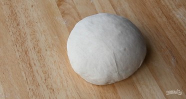
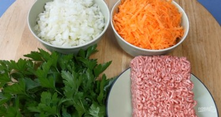
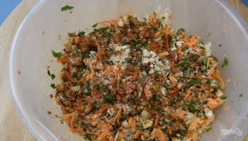
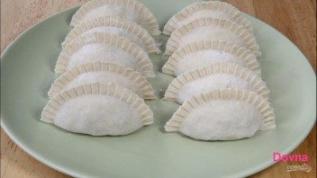
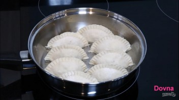
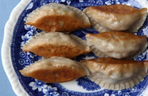

Замесите тесто. На две части муки возьмите одну часть холодной воды. Тесто должно получиться очень тугим. Накройте его миской, дайте отдохнуть 20 минут.

Подготовьте ингредиенты для начинки в соотношении 1 к 3. Нарежьте лук, натрите на крупной терке морковь.

Смешайте все ингредиенты, посолите, добавьте имбирь и соевый соус.

Тесто раскатайте в пласт, выдавите из него кружочки. Раскатайте каждый кружочек, сделайте пельмешки (у меня есть форма, но можно и руками).

Разогрейте на сковороде немного подсолнечного масла, обжарьте пельмени с одной стороны. Влейте в сковороду немного холодной воды, накройте крышкой и дайте пельменям немного "попариться".

Приятного аппетита!